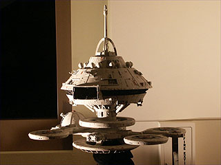

|

STAR TREK II:
THE WRATH OF KHAN
1982

|

Sinopse
comentada
Comentários
Citações
Efeitos
Especiais
Trilha Sonora
Trivia
Ficha
Técnica
O
DVD
 Nicholas Meyer (nascido em 24 de dezembro de 1945 nos EUA) iniciou sua carreira em Hollywood como publicitário, para depois fazer sucesso como roteirista, diretor e produtor. Começou a ser notado após ter co-escrito (roteiro este indicado ao prêmio Emmy) o filme para TV: "The Night That Panicked America"
(1975) (sobre a legendária transmissão de rádio de "War Of Worlds", por Orson Welles). No ano seguinte, ele entrou de fato para o mundo do
cinema, quando o seu roteiro (baseado em seu próprio romance) de "The Seven Percent Solution"
(1976) foi indicado ao Oscar de roteiro adaptado (e também para o respectivo prêmio da WGA -- Associação dos Roteiristas da América). Seu roteiro trazia um encontro inusitado entre Sherlock Holmes e Sigmund Freud. Em seguida ele escreveu e (finalmente) dirigiu "Time After Time"
(1979), que também trazia um encontro de dois gigantes da literatura nas pessoas de H. G. Wells (Malcom McDowell -- tio de Siddig El Fadil, o doutor Bashir de
Deep Space Nine -- posteriormente o doutor Soran de "Generations") e Jack
o Estripador (David Warner -- posteriormente St. John Talbot e o chanceler Klingon Gorkon respectivamente nos filmes V e VI de
Jornada para o cinema e também o Cardassiano Gul Madred em "Chain
of Command", da sexta temporada de A Nova Geração). Meyer posteriormente redefiniria o conceito de
Jornada nas Estrelas ao escrever e dirigir "Jornada nas Estrelas II: A Ira de Khan"
(1982) (talvez seu melhor trabalho) e "Jornada Nas Estrelas VI: A Terra Desconhecida"
(1991) (que foi o último filme de cinema dirigido por ele até 2002) e somente escrever
"Jornada nas Estrelas IV: A volta Para Casa" (1986). Em 1983 chocou a opinião pública
americana com o polêmico filme para TV, "The Day After" (com Bibi Besch e grande elenco), sobre o "dia seguinte" de uma guerra nuclear mundial. Escreveu também o roteiro do polêmico (mas superestimado) filme "Fatal Attraction"
(1987), dirigido por Adrian Lyne e estrelado por Michael Douglas e Glenn Close. Seus trabalhos recentes de maior destaque foram no polimento do roteiro de
"The Prince of Egypt" (1998) e na produção da mini-série de TV (indicada ao Emmy)
"The Odyssey" (1997). Meyer ganhou o prêmio Saturn de diretor tanto por "Time After Time" quanto pelo filme II de
Jornada. "Time After Time" ganhou o prêmio do Festival de Filmes Fantásticos de Avoriaz e foi também indicado ao prêmio Edgar Allan Poe. Meyer foi indicado também ao prêmio Poe, por ter escrito para TV: "Judge Dee and the Monastery Murders"
(1974). "Time After Time" e os Filmes II, IV e VI de Jornada foram todos indicados ao prêmio Hugo de ficção científica.
Nicholas Meyer (nascido em 24 de dezembro de 1945 nos EUA) iniciou sua carreira em Hollywood como publicitário, para depois fazer sucesso como roteirista, diretor e produtor. Começou a ser notado após ter co-escrito (roteiro este indicado ao prêmio Emmy) o filme para TV: "The Night That Panicked America"
(1975) (sobre a legendária transmissão de rádio de "War Of Worlds", por Orson Welles). No ano seguinte, ele entrou de fato para o mundo do
cinema, quando o seu roteiro (baseado em seu próprio romance) de "The Seven Percent Solution"
(1976) foi indicado ao Oscar de roteiro adaptado (e também para o respectivo prêmio da WGA -- Associação dos Roteiristas da América). Seu roteiro trazia um encontro inusitado entre Sherlock Holmes e Sigmund Freud. Em seguida ele escreveu e (finalmente) dirigiu "Time After Time"
(1979), que também trazia um encontro de dois gigantes da literatura nas pessoas de H. G. Wells (Malcom McDowell -- tio de Siddig El Fadil, o doutor Bashir de
Deep Space Nine -- posteriormente o doutor Soran de "Generations") e Jack
o Estripador (David Warner -- posteriormente St. John Talbot e o chanceler Klingon Gorkon respectivamente nos filmes V e VI de
Jornada para o cinema e também o Cardassiano Gul Madred em "Chain
of Command", da sexta temporada de A Nova Geração). Meyer posteriormente redefiniria o conceito de
Jornada nas Estrelas ao escrever e dirigir "Jornada nas Estrelas II: A Ira de Khan"
(1982) (talvez seu melhor trabalho) e "Jornada Nas Estrelas VI: A Terra Desconhecida"
(1991) (que foi o último filme de cinema dirigido por ele até 2002) e somente escrever
"Jornada nas Estrelas IV: A volta Para Casa" (1986). Em 1983 chocou a opinião pública
americana com o polêmico filme para TV, "The Day After" (com Bibi Besch e grande elenco), sobre o "dia seguinte" de uma guerra nuclear mundial. Escreveu também o roteiro do polêmico (mas superestimado) filme "Fatal Attraction"
(1987), dirigido por Adrian Lyne e estrelado por Michael Douglas e Glenn Close. Seus trabalhos recentes de maior destaque foram no polimento do roteiro de
"The Prince of Egypt" (1998) e na produção da mini-série de TV (indicada ao Emmy)
"The Odyssey" (1997). Meyer ganhou o prêmio Saturn de diretor tanto por "Time After Time" quanto pelo filme II de
Jornada. "Time After Time" ganhou o prêmio do Festival de Filmes Fantásticos de Avoriaz e foi também indicado ao prêmio Edgar Allan Poe. Meyer foi indicado também ao prêmio Poe, por ter escrito para TV: "Judge Dee and the Monastery Murders"
(1974). "Time After Time" e os Filmes II, IV e VI de Jornada foram todos indicados ao prêmio Hugo de ficção científica.
 Ricardo Montalban (nascido a 25 de Novembro de 1920 na Cidade do México, México) é casado com Georgiana Young (irmã da atriz Loretta Young) desde de 1944, com quatro filhos. Montalban tem um irmão também ator,
de nome Carlos, e durante anos fez comerciais da Chrysler. O ator se submeteu a uma operação em 1993 para reparar um dano na espinha recebido durante a produção de "Across The Wide Missouri", em 1951. Desde então ele tem estado em dor constante e confinado a
uma cadeira de rodas. No começo de carreira disputou o título de "Amante Latino da MGM" com Fernando Lamas. Um protagonista charmoso, fez vários musicais, mas se saiu ainda melhor ao interpretar papeis mais complexos como em "Sayonara"
(1975) e "Cheyenne Autumn" (1964). Como o chefe de uma tribo Sioux em "How The West Was Won"
(1976), ele ganhou um prêmio Emmy. Mesmo sendo reconhecido por sua participação como Khan em
Jornada, Montalban ficou inapelavelmente marcado como o infame senhor Roarke da série "Fantasy Island" (1978-1984). Alguns outros óbvios créditos
Sci-Fi (além de Jornada) seriam (como o personagem Armando) em "Escape From The Planet Of The Apes"
(1971) e "Conquest Of The Planet Of The Apes" (1972). Ele recebeu um prêmio da SAG pelo conjunto da sua obra em 1994. Montalban teve
de reassistir ao episódio "Space Seed" para recapturar o personagem de
"Khan"; sua leitura inicial soou ridiculamente parecido com o "senhor Roarke", segundo o ator. A abundância peitoral mostrada por Montalban em
"A Ira De Khan" é definitivamente do corpo do ator. Não foram utilizadas maquiagem ou roupas especiais.
Ricardo Montalban (nascido a 25 de Novembro de 1920 na Cidade do México, México) é casado com Georgiana Young (irmã da atriz Loretta Young) desde de 1944, com quatro filhos. Montalban tem um irmão também ator,
de nome Carlos, e durante anos fez comerciais da Chrysler. O ator se submeteu a uma operação em 1993 para reparar um dano na espinha recebido durante a produção de "Across The Wide Missouri", em 1951. Desde então ele tem estado em dor constante e confinado a
uma cadeira de rodas. No começo de carreira disputou o título de "Amante Latino da MGM" com Fernando Lamas. Um protagonista charmoso, fez vários musicais, mas se saiu ainda melhor ao interpretar papeis mais complexos como em "Sayonara"
(1975) e "Cheyenne Autumn" (1964). Como o chefe de uma tribo Sioux em "How The West Was Won"
(1976), ele ganhou um prêmio Emmy. Mesmo sendo reconhecido por sua participação como Khan em
Jornada, Montalban ficou inapelavelmente marcado como o infame senhor Roarke da série "Fantasy Island" (1978-1984). Alguns outros óbvios créditos
Sci-Fi (além de Jornada) seriam (como o personagem Armando) em "Escape From The Planet Of The Apes"
(1971) e "Conquest Of The Planet Of The Apes" (1972). Ele recebeu um prêmio da SAG pelo conjunto da sua obra em 1994. Montalban teve
de reassistir ao episódio "Space Seed" para recapturar o personagem de
"Khan"; sua leitura inicial soou ridiculamente parecido com o "senhor Roarke", segundo o ator. A abundância peitoral mostrada por Montalban em
"A Ira De Khan" é definitivamente do corpo do ator. Não foram utilizadas maquiagem ou roupas especiais.
 Kirstie Alley fez a sua estréia de fato no cinema em "A Ira de
Khan". Após o filme a sua carreira literalmente "empacou" (primariamente por problemas de
relacionamento), só voltando a deslanchar quando substituiu Shelley Long
na sitcom "Cheers" (1982), no período de 1987 a 1993, levando a um sem-número de ridículas comédias no
cinema. Sua única entrada cinematográfica relevante (ao lado de "A Ira de
Khan") é "Deconstructing Harry" (1997), de Woody Allen. Mais tarde encabeçou o elenco de "Veronica's Closet"
(1997), outra sit-com. Problemas de relacionamento ou não, ela é a única integrante viva do elenco de "Cheers" que nunca participou da série derivada, "Frasier". Teve várias indicações ao Emmy e ao Globo de Ouro por "Cheers" e uma vitória em cada. Por "Veronica's Closet", recebeu uma indicação ao Emmy, uma ao Globo de Ouro e uma para o prêmio da SAG -- Sindicato dos Atores de Tela. Foi indicada ao Emmy pela
minissérie "The Last Don" (1997) e ganhou o Emmy pelo telefilme "David's Mother"
(1994) (pelo qual também foi indicada ao Globo de Ouro).
Kirstie Alley fez a sua estréia de fato no cinema em "A Ira de
Khan". Após o filme a sua carreira literalmente "empacou" (primariamente por problemas de
relacionamento), só voltando a deslanchar quando substituiu Shelley Long
na sitcom "Cheers" (1982), no período de 1987 a 1993, levando a um sem-número de ridículas comédias no
cinema. Sua única entrada cinematográfica relevante (ao lado de "A Ira de
Khan") é "Deconstructing Harry" (1997), de Woody Allen. Mais tarde encabeçou o elenco de "Veronica's Closet"
(1997), outra sit-com. Problemas de relacionamento ou não, ela é a única integrante viva do elenco de "Cheers" que nunca participou da série derivada, "Frasier". Teve várias indicações ao Emmy e ao Globo de Ouro por "Cheers" e uma vitória em cada. Por "Veronica's Closet", recebeu uma indicação ao Emmy, uma ao Globo de Ouro e uma para o prêmio da SAG -- Sindicato dos Atores de Tela. Foi indicada ao Emmy pela
minissérie "The Last Don" (1997) e ganhou o Emmy pelo telefilme "David's Mother"
(1994) (pelo qual também foi indicada ao Globo de Ouro).
 Quando Kirstie Alley pediu alto para reprisar o seu papel nos filmes posteriores de
Jornada no cinema, Robin Curtis foi recrutada para os filmes III e IV. Curiosamente, Saavik, pelo roteiro e por uma cena filmada (entre Kirk e Spock), mas nunca usada, é uma mestiça Romulana-Vulcana. E a atuação de Alley em
"A Ira De Khan" reflete tal natureza híbrida. Nos filmes III e IV, a caracterização de Saavik foi mudada drasticamente, como para a de uma Vulcana
plena, criando um grosseiro e óbvio erro de continuidade entre os filmes.
Quando Kirstie Alley pediu alto para reprisar o seu papel nos filmes posteriores de
Jornada no cinema, Robin Curtis foi recrutada para os filmes III e IV. Curiosamente, Saavik, pelo roteiro e por uma cena filmada (entre Kirk e Spock), mas nunca usada, é uma mestiça Romulana-Vulcana. E a atuação de Alley em
"A Ira De Khan" reflete tal natureza híbrida. Nos filmes III e IV, a caracterização de Saavik foi mudada drasticamente, como para a de uma Vulcana
plena, criando um grosseiro e óbvio erro de continuidade entre os filmes.
 Paul Winfield voltaria a participar de Jornada como o capitão Dathon no episódio
"Darmok", da quinta temporada de A Nova Geração. "A
Ira de Khan", talvez seja o seu segundo mais popular filme para o
cinema, ficando atrás apenas de "The Terminator" (1984), que ele fez dois anos depois. Foi indicado ao Oscar por "Sounder"
(1972) e ao Emmy por "Roots: The Next Generations" (1979) e "King"
(1978). Ganhou o Emmy de ator convidado por uma notável participação em "Picket Fences"
(1992).
Paul Winfield voltaria a participar de Jornada como o capitão Dathon no episódio
"Darmok", da quinta temporada de A Nova Geração. "A
Ira de Khan", talvez seja o seu segundo mais popular filme para o
cinema, ficando atrás apenas de "The Terminator" (1984), que ele fez dois anos depois. Foi indicado ao Oscar por "Sounder"
(1972) e ao Emmy por "Roots: The Next Generations" (1979) e "King"
(1978). Ganhou o Emmy de ator convidado por uma notável participação em "Picket Fences"
(1992).
 A falecida Bibi Besch apenas participou de Jornada em "A Ira de Khan" (que talvez seja o seu mais popular trabalho no
cinema). Ela recebeu indicações ao prêmio Emmy pelos seguintes trabalhos para TV: na série "Northern Exposure" (1990) e na mini-série "Doing Time on Maple Drive"
(1992). O falecido Merrit Butrick retornaria no filme III, novamente como o doutor David Marcus, para a morte do personagem. Mais tarde ele participou da primeira temporada de
A Nova Geração como T'Jon em "Symbiosis". Imagens suas seriam vistas (em
flashback) no episódio "Shades of Grey", da segunda temporada da mesma série.
"A Ira de Khan" talvez seja o trabalho mais popular de Butrick também.
A falecida Bibi Besch apenas participou de Jornada em "A Ira de Khan" (que talvez seja o seu mais popular trabalho no
cinema). Ela recebeu indicações ao prêmio Emmy pelos seguintes trabalhos para TV: na série "Northern Exposure" (1990) e na mini-série "Doing Time on Maple Drive"
(1992). O falecido Merrit Butrick retornaria no filme III, novamente como o doutor David Marcus, para a morte do personagem. Mais tarde ele participou da primeira temporada de
A Nova Geração como T'Jon em "Symbiosis". Imagens suas seriam vistas (em
flashback) no episódio "Shades of Grey", da segunda temporada da mesma série.
"A Ira de Khan" talvez seja o trabalho mais popular de Butrick também.
 "A Ira De Khan" foi um verdadeiro divisor de águas na carreira de James Horner (por
isso tivemos uma trilha com tanta qualidade a um preço baixo) que ainda voltaria para fazer a trilha do filme seguinte:
"Jornada nas Estrelas III: À Procura de Spock" (1984). Ele viria a trabalhar depois em vários filmes populares, tais como: "Der Name Der Rose"
(1986), "Aliens" (1986), "Die Hard" (1988), "Field Of Dreams"
(1989), "Glory" (1989), "Searching For Bobby Fischer" (1993), "Apollo 13"
(1995), "Braveheart" (1995) e "A Beautiful Mind" (2001). Isto sem esquecer o estrondoso sucesso comercial de "Titanic"
(1997).
"A Ira De Khan" foi um verdadeiro divisor de águas na carreira de James Horner (por
isso tivemos uma trilha com tanta qualidade a um preço baixo) que ainda voltaria para fazer a trilha do filme seguinte:
"Jornada nas Estrelas III: À Procura de Spock" (1984). Ele viria a trabalhar depois em vários filmes populares, tais como: "Der Name Der Rose"
(1986), "Aliens" (1986), "Die Hard" (1988), "Field Of Dreams"
(1989), "Glory" (1989), "Searching For Bobby Fischer" (1993), "Apollo 13"
(1995), "Braveheart" (1995) e "A Beautiful Mind" (2001). Isto sem esquecer o estrondoso sucesso comercial de "Titanic"
(1997).
 Harve Fischman "Bennett" (nascido a 17 de agosto de 1930 em Chicago, Illinois, EUA) chegou a
Jornada com uma bagagem predominantemente televisiva. Foi responsável por séries muito poulares no Brasil nos anos 1970 como: "The Six Million Dollar
Man" (1974), "The Invisible Man" (1975), "The Bionic Woman"
(1976), "Gemini Man" (1976) etc. Essencialmente suas únicas entradas no cinema são dos
filmes II a V de Jornada. Seus trabalhos mais recentes são "Time Trax"
(1993) e "Invasion America" (1998).
Harve Fischman "Bennett" (nascido a 17 de agosto de 1930 em Chicago, Illinois, EUA) chegou a
Jornada com uma bagagem predominantemente televisiva. Foi responsável por séries muito poulares no Brasil nos anos 1970 como: "The Six Million Dollar
Man" (1974), "The Invisible Man" (1975), "The Bionic Woman"
(1976), "Gemini Man" (1976) etc. Essencialmente suas únicas entradas no cinema são dos
filmes II a V de Jornada. Seus trabalhos mais recentes são "Time Trax"
(1993) e "Invasion America" (1998).
 O produtor Harve Bennett assistiu a todos os episódios da Série Clássica (em 16mm e em uma sala de projeção) e vislumbrou o final de
"Space Seed" como quase que "pedindo" por uma continuação. Leonard Nimoy não estava interessado em reprisar o papel de Spock. Bennett acabou convencendo o ator a participar, oferecendo a ele uma "grande cena de morte" para Spock. Em uma nota curiosa, William Shatner clama para si a autoria da idéia visual da cena da morte de Spock, separando Kirk e Spock por uma parede transparente na Engenharia. A primeira versão do roteiro não agradou muito a Nimoy, somente quando Nicholas Meyer (recém-contratado para dirigir o filme e quase que completamente analfabeto em
Jornada no início do seu trabalho) o reescreveu (em tempo recorde, aliás) é que o ator de Spock ficou realmente satisfeito.
O produtor Harve Bennett assistiu a todos os episódios da Série Clássica (em 16mm e em uma sala de projeção) e vislumbrou o final de
"Space Seed" como quase que "pedindo" por uma continuação. Leonard Nimoy não estava interessado em reprisar o papel de Spock. Bennett acabou convencendo o ator a participar, oferecendo a ele uma "grande cena de morte" para Spock. Em uma nota curiosa, William Shatner clama para si a autoria da idéia visual da cena da morte de Spock, separando Kirk e Spock por uma parede transparente na Engenharia. A primeira versão do roteiro não agradou muito a Nimoy, somente quando Nicholas Meyer (recém-contratado para dirigir o filme e quase que completamente analfabeto em
Jornada no início do seu trabalho) o reescreveu (em tempo recorde, aliás) é que o ator de Spock ficou realmente satisfeito.
 Começaram a surgir dúvidas ns cabeças de Bennett e Nimoy sobre a morte de Spock, durante as filmagens. Parecia haver potencial suficiente de histórias e química no elenco para municiar muitos outros filmes. Por intermédio de Nimoy, foi introduzido um elo mental com McCoy e a enigmática fala "lembre-se", Bennett confirmou também que algumas cenas foram refilmadas para adicionar "esperança" ao final. Curiosamente Bennett também confirmou que Meyer era partidário de um final bem definitivo para o personagem, como havia sido escrito no roteiro. Posto isto, ficam dúvidas sobre quem dirigiu as tais citadas refilmagens. Se não foi Meyer, que voltou atrás em sua posição (classificada por Bennett como "irredutível"), quem foi? Como a tal cena do "elo mental" foi incluída
se não estava no roteiro? Meyer fez vista grossa para algo tão óbvio, ou algum artifício foi utilizado para
tirá-lo da equação?
Começaram a surgir dúvidas ns cabeças de Bennett e Nimoy sobre a morte de Spock, durante as filmagens. Parecia haver potencial suficiente de histórias e química no elenco para municiar muitos outros filmes. Por intermédio de Nimoy, foi introduzido um elo mental com McCoy e a enigmática fala "lembre-se", Bennett confirmou também que algumas cenas foram refilmadas para adicionar "esperança" ao final. Curiosamente Bennett também confirmou que Meyer era partidário de um final bem definitivo para o personagem, como havia sido escrito no roteiro. Posto isto, ficam dúvidas sobre quem dirigiu as tais citadas refilmagens. Se não foi Meyer, que voltou atrás em sua posição (classificada por Bennett como "irredutível"), quem foi? Como a tal cena do "elo mental" foi incluída
se não estava no roteiro? Meyer fez vista grossa para algo tão óbvio, ou algum artifício foi utilizado para
tirá-lo da equação?
 Foram acrescentadas ainda mais duas cenas em pós-produção, a do caixão fotônico de Spock na superfície do planeta "Genesis" (feita diretamente pela ILM
-- reparem na melhor fotografia desta cena em particular se comparada à fotografia de primeira unidade do filme) e ao do "prólogo" ("Espaço, a fronteira final...") agora narrado por Spock. Quase prometendo literalmente que haveria um novo filme de
Jornada e que Spock iria voltar nele.
Foram acrescentadas ainda mais duas cenas em pós-produção, a do caixão fotônico de Spock na superfície do planeta "Genesis" (feita diretamente pela ILM
-- reparem na melhor fotografia desta cena em particular se comparada à fotografia de primeira unidade do filme) e ao do "prólogo" ("Espaço, a fronteira final...") agora narrado por Spock. Quase prometendo literalmente que haveria um novo filme de
Jornada e que Spock iria voltar nele.
 Para a aventura seguinte ("Jornada nas Estrelas III: À Procura de
Spock"), Bennett seria o produtor e único roteirista e Nimoy seria o diretor. Curiosamente (e injustamente), Meyer (a figura de criação mais importante de
Jornada desde Gene L. Coon) saía de cena. Felizmente, devido aos pífios diálogos do
filme III (entre outros problemas do roteiro), ele foi chamado para ao menos escrever o
filme IV (a direção ficou novamente com Nimoy). Com o completo fiasco de Bennett e Shatner no
filme V, Meyer finalmente foi chamado para escrever e dirigir o filme VI (que marcaria a despedida da tripulação de Kirk e
cia.), mais uma vez desafiando o que havia se convencionado chamar de Jornada
nas Estrelas até então.
Para a aventura seguinte ("Jornada nas Estrelas III: À Procura de
Spock"), Bennett seria o produtor e único roteirista e Nimoy seria o diretor. Curiosamente (e injustamente), Meyer (a figura de criação mais importante de
Jornada desde Gene L. Coon) saía de cena. Felizmente, devido aos pífios diálogos do
filme III (entre outros problemas do roteiro), ele foi chamado para ao menos escrever o
filme IV (a direção ficou novamente com Nimoy). Com o completo fiasco de Bennett e Shatner no
filme V, Meyer finalmente foi chamado para escrever e dirigir o filme VI (que marcaria a despedida da tripulação de Kirk e
cia.), mais uma vez desafiando o que havia se convencionado chamar de Jornada
nas Estrelas até então.
 O diretor Nicholas Meyer imaginou o filme como uma espécie de "Horation Hornblower no espaço". Ele chegou a ponto de fazer todo o elenco assistir (para fins de inspiração e motivação) uma versão filmada de tal história: "Captain Horatio Hornblower"
(1951).
O diretor Nicholas Meyer imaginou o filme como uma espécie de "Horation Hornblower no espaço". Ele chegou a ponto de fazer todo o elenco assistir (para fins de inspiração e motivação) uma versão filmada de tal história: "Captain Horatio Hornblower"
(1951).
 Vemos diversos livros nas prateleiras dos abrigos do pessoal de Khan em Ceti
Alfa V. Dois deles são "Moby Dick" e "King Lear" e várias falas de Khan são retiradas destes dois livros. Em particular as últimas palavras de Khan são exatamente as mesmas últimas palavras do capitão Ahab no livro de Melville ("Moby Dick"). Vemos também o livro "Paradise Lost", que serviu de inspiração para a cena final de
"Space Seed". E, em uma nota bem humorada, todo os homens de Khan eram dançarinos do Chippendale naquela época.
Vemos diversos livros nas prateleiras dos abrigos do pessoal de Khan em Ceti
Alfa V. Dois deles são "Moby Dick" e "King Lear" e várias falas de Khan são retiradas destes dois livros. Em particular as últimas palavras de Khan são exatamente as mesmas últimas palavras do capitão Ahab no livro de Melville ("Moby Dick"). Vemos também o livro "Paradise Lost", que serviu de inspiração para a cena final de
"Space Seed". E, em uma nota bem humorada, todo os homens de Khan eram dançarinos do Chippendale naquela época.
 Fãs sempre especularam se a doutora Carol Marcus não seria a "loira do laboratório" (com quem Kirk "quase se casou"), citada por Gary Mitchell em
"Where No Mas Has Gone Before". Uma versão inicial do roteiro trazia a doutora Janet Wallace (de
"The Deadly Years" da segunda temporada da Série Clássica) representando o papel que seria da doutora Carol Marcus.
Fãs sempre especularam se a doutora Carol Marcus não seria a "loira do laboratório" (com quem Kirk "quase se casou"), citada por Gary Mitchell em
"Where No Mas Has Gone Before". Uma versão inicial do roteiro trazia a doutora Janet Wallace (de
"The Deadly Years" da segunda temporada da Série Clássica) representando o papel que seria da doutora Carol Marcus.
 Quando Spock e Saavik "conversam entre si em Vulcano", nós vemos claramente que os atores falam
inglês. Foram criadas "palavras Vulcanas" em pós-produção para casar de forma adequada com o movimento das bocas dos atores.
Quando Spock e Saavik "conversam entre si em Vulcano", nós vemos claramente que os atores falam
inglês. Foram criadas "palavras Vulcanas" em pós-produção para casar de forma adequada com o movimento das bocas dos atores.
 O título tentativo de "The Vengeance of Khan" foi descartado, pois o terceiro filme da saga de George Lucas aparentemente usaria um título similar. No final ambos os filmes foram lançados com diferentes títulos. O
subtítulo "The Undiscovered Country" (uma referência à morte vinda de "Hamlet") não foi utilizado por Meyer aqui e acabou sendo reaproveitado pelo próprio no
filme VI de Jornada para o cinema, um filme entupido de referências Shakesperianas. Só que neste último o termos se traduziu como uma referência ao "futuro".
O título tentativo de "The Vengeance of Khan" foi descartado, pois o terceiro filme da saga de George Lucas aparentemente usaria um título similar. No final ambos os filmes foram lançados com diferentes títulos. O
subtítulo "The Undiscovered Country" (uma referência à morte vinda de "Hamlet") não foi utilizado por Meyer aqui e acabou sendo reaproveitado pelo próprio no
filme VI de Jornada para o cinema, um filme entupido de referências Shakesperianas. Só que neste último o termos se traduziu como uma referência ao "futuro".
 O filme ganhou os prêmios Saturn de melhor ator (para William Shatner) e de direção (para Nicholas Meyer). O filme também foi indicado ao prêmio Hugo.
O filme ganhou os prêmios Saturn de melhor ator (para William Shatner) e de direção (para Nicholas Meyer). O filme também foi indicado ao prêmio Hugo.
 Tivemos uma participação de John Winston como comandante Kyle, seu personagem recorrente na
Série Clássica. O compositor James Horner aparece rapidamente como um tripulante da Enterprise (aparição não-creditada).
Tivemos uma participação de John Winston como comandante Kyle, seu personagem recorrente na
Série Clássica. O compositor James Horner aparece rapidamente como um tripulante da Enterprise (aparição não-creditada).
 Devido a severas limitações orçamentárias impostas pelo estúdio, decisões foram tomadas (desde a estrutura do roteiro em si) para minimizar os gastos. Cenários e adereços pré-existentes foram re-utilizados sempre que possível e de forma bastante agressiva em prol da máxima economia. Foram tomados tantos cuidados que 65% do filme (!) acabou sendo filmado em um único cenário.
Devido a severas limitações orçamentárias impostas pelo estúdio, decisões foram tomadas (desde a estrutura do roteiro em si) para minimizar os gastos. Cenários e adereços pré-existentes foram re-utilizados sempre que possível e de forma bastante agressiva em prol da máxima economia. Foram tomados tantos cuidados que 65% do filme (!) acabou sendo filmado em um único cenário.
 Aqui estão alguns exemplos de economia:
Aqui estão alguns exemplos de economia:
- A estação Regula I (cujo interior é um verdadeiro "paraíso dos osciloscópios" e um proverbial "mostruário de árvore de natal") é simplesmente a estação orbital do
filme I virada de cabeça para baixo.

- A tomada dos três cruzadores Klingons (na tela do simulador da ponte da Enterprise na abertura do filme) foi reaproveitada do filme anterior também. Assim como os trajes ambientais de Terrell e Chekov, que vieram do mesmo armário que o traje de Spock, que
o Vulcano utiliza em sua "caminhada espacial" no interior de V'Ger na aventura cinematográfica passada.
- Os cenários da Reliant foram exatamente os da Enterprise, com diferente iluminação, ângulos de câmera e coberturas
para os assentos (é fácil observar em várias cenas gráficos nos monitores da Reliant que não conferem com a real forma da nave). O modelo físico da nave estelar Reliant era muito menos detalhado (e tinha menos recursos) que o da Enterprise, feito para satisfazer somente
às necessidades mínimas pedidas pelo roteiro e nada mais.
- Os cenários da sala de torpedos da Enterprise e da sala de transporte de Regula I eram originalmente parte do cenário da ponte do cruzador Klingon do primeiro filme de
Jornada para o cinema. E ainda todas as tomadas externas relativas ao lançamento da Enterprise na Terra foram tomadas emprestadas do filme dirigido por Robert Wise.
- O segundo filme de Jornada para o cinema foi desenvolvido pela divisão de televisão da Paramount (e a possibilidade
de ele ser exibido como um telefilme na NBC ao invés de ser lançado nos
cinemas foi uma opção deixada aberta até a última hora), especificamente para cortar custos. Isto é claramente percebido na fotografia pobre do filme (o filme anterior arrecadou muito dinheiro, mas também custou muito e teve uma produção ridiculamente confusa com sucessivos estouros de orçamento; o segundo filme da marca é que mostrou aos executivos da Paramount que eles tinham de fato e sem nenhuma dúvida uma "mina de ouro" nas mãos). Os gráficos descritivos de uma nave erguendo os escudos foram trazidos diretamente de trabalhos não-aproveitados de
Jornada nas Estrelas: Fase II.
(Curioso que muitos fãs tenham criticado ao longo do tempo os seguintes filmes de
Jornada por eles serem "filmes para TV" ou um "episódio duplo estendido" quando o seu mais popular representante é um formal telefilme.)
- Uma das antiguidades no apartamento de Kirk era um computador "Commodore 64". O container(s) prateado(s) que abrigava Khan e os seus seguidores era na realidade um modelo de nave espacial de "Conquest
of Space" (1955). A enorme pintura de fundo de São Francisco "vista pela janela" do apartamento do almirante Kirk foi reaproveitada de "The Towering Inferno"
(1974).